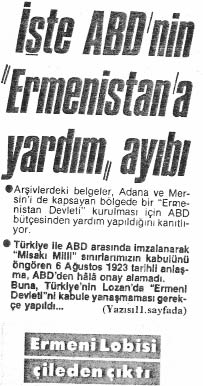

Serdar Palabıyık :
Milletvekilliğiniz süresince Türkiye’yi diplomatik alanda da temsil ettiniz. 1991-1995 döneminde “Avrupa Güvenlik ve İşbirliği Teşkilatı (AGİT) Başkan Yardımcılığı ve Türk Grubu Başkanlığı”, 1995-1999 arasındaki TBMM Başkanvekilliği görevinizi hariç tutarsak, 1999-2002 döneminde “Avrupa Konseyi Parlamenterler Meclisi (AKPM) Başkan Yardımcılığı” ve
“Avrupa Konseyi Parlamenterler Meclisi ve Batı Avrupa Birliği Asamblesi Türk Grupları Başkanlığı” görevlerini yürüttünüz. Bu görevleriniz sırasında Batılı meslektaş ve mevkidaşlarınızdan Ermeni Sorunu’na ilişkin ne gibi tepkiler alıyordunuz? Bahsettiğiniz “çifte standart”a dayalı anlayışlarla karşılaştınız mı? Ermeni Sorunu konusunda size yönelen eleştirileri nasıl yanıtladınız?
Uluç Gürkan :
“Ermeni Soykırımı” iddiasını uluslararası parlamentolarda gündeme getiren yabancı parlamenterlerin hemen hepsi, doğrudan “Türkiye”yi ve “Türk halkı”nı suçluyordu. Bunların arasında en bilgili olanları bile, ancak “Osmanlı Devleti” vurgusu yapabiliyordu...
Oysa “soykırım” suçundan bahsedebilmek için öncelikli koşul, suçun faillerini hukuken “gerçek kişiler” olarak belirlemektir... Dolayısıyla, ne zaman “soykırım” iddiasıyla karşı karşıya kalsam, özetle şu itirazımı dile getiriyordum:
“Soykırım nedeniyle devletleri, halkları suçlayamazsınız. Bu tutumunuz, Soykırım Sözleşmesi’ndeki ‘soykırım suçu ancak gerçek kişiler tarafından işlenebilir’ vurgusuna terstir... Ötesinde, başta Yahudi Soykırımı olmak üzere, dünyadaki bütün soykırım suçlamalarında sanık sandalyesine sadece gerçek kişiler oturtulurken, Ermeni soykırım iddialarının Türkiye’yi ve Türkleri hedef alması kabul edilemez. Bu ırkçı bir çifte standarttır. Söylemiyle de nefreti körüklemektedir...”
Yıllar içinde şöyle bir kanaatim oluştu: “Ermeni Soykırımı” iddialarını seslendirenlerin birçoğu, bunu insani kaygılarla yapmıyorlardı. Daha çok, bilinçaltlarındaki Türkiye ve Türk karşıtlığını dışa vuruyorlardı...
Bu, örneklerini Batılı ünlü düşünürlerden aktardığımız örneklerde de görüldüğü gibi geçmişi yüzyıllar öncesine giden bir karşıtlık. “Ermeni Soykırımı” iddialarıyla bir bakıma güncel politikaya dönüştürülmüş oluyor. Bu da, Batılı demokrasilerin II. Dünya Savaşı sonrasında oluşturmayı amaçladıkları uluslararası hukuk zeminiyle çelişiyor.
II. Dünya Savaşı’nın galipleri, soykırımı “insanlık suçu” olarak tanımlamışlar. Bu suçun ancak “gerçek kişiler” tarafından işlenebileceğini ve ancak uluslararası yetkinliği tanınmış bir mahkeme kararıyla hüküm ifade edebileceğini kabul etmişler. O günden bugüne, Ruanda’da, eski Yugoslavya’da, Sierra Leone’de, Somali’de yaşanan etnik ve dini çatışmalar tartışılırken bu kurallara uyulmuş. Suçlu olarak ülkeler, uluslar değil, gerçek kişiler belirlenmiş ve Birleşmiş Milletler şemsiyesi altında oluşturulan uluslararası yetkin mahkemelerin yargı yetkisi gözetilmiş.
“Ermeni Soykırımı” iddialarına gelince bu özen kayboluyor. Türkiye ülkesi, devleti ve ulusuyla doğrudan hedef alınıyor. “Tarihinizle yüzleşmelisiniz” denilerek soykırımcı yaftası Türkiye’nin üzerine yapıştırılmak isteniyor.
Uluslararası parlamentolarda görev yaparken Batı’nın Türkiye ile ilgili önyargılarını ve bu temelde tetikledikleri nefret söylemlerini teşhir etmeye özellikle önem verdim. Uygulamadaki çifte standartlarını yüzlerine vurmaktan da hiç kaçınmadım. Varmak istediğim nokta son derece basit ve yalındı... Türkiye, tarihiyle yüzleşmeye hazır. Bundan kaçınmıyor. Ancak, aynı yüzleşmeyi Batı’nın da önyargıları konusunda yapması gerekiyor. Sonuç hiç de fena değildi; Batılılar, çifte standartlarının yüzlerine vurulmasından hoşlanmıyorlar. Fevkalade rahatsız oluyorlar. Yalanlayamadıklarında da kolayca dağılabiliyorlar. Önyargılarıyla hesaplaşmaya girmeseler de, tartışmada size de hak veriyor gibi görünüp geri adım atabiliyorlar.
Batılıların bu tutumuyla ilgili en çarpıcı örneği, “Ermeni Soykırımı” iddialarıyla ilgisiz bir başka konuda yaşadım... Avrupa Konseyi Parlamenter Meclisi’nde “İşkenceyi Önleme Komitesi”ne üye seçecektik. Ülkeler adaylarını göstermişlerdi. Koşul, tıp öğrenimi görmüş ve 60 yaşını doldurmamış olmaktı... Öninceleme Komitesi, 58 yaşındaki Türk adayı için “komitenin aradığı yeterlikte tıp öğrenimi görmediği” gerekçesiyle olumsuz rapor vermişti. Buna karşın, hiç tıp eğitimi hiç almamış ve Türk adaydan daha yaşlı bir ülke adayı olumlu bulunmuştu. Son derece sakin bir ses tonuyla bu çelişkiyi sergiledim ve böylesi bir çifte standardın kabul edilemeyeceğini söyledim. “Çifte standart” sözünü duyunca Öninceleme Komitesi’nin bayan raportörünün yüzü bir anda kıpkırmızı oldu. Komisyon Başkanı ise olayın tadını çıkartmama fırsat vermedi, araya girdi ve “tamam tamam, Türkler kazandı” diyerek konuyu kapattı...
“Ermeni Soykırımı” tartışmalarında da benzer öykülere tanık oldum... Hemen her yıl, AGİT’te olsun, AKPM’de olsun 24 Nisan’a en yakın toplantıda “Ermeni Soykırımı”nı anma girişimleri oluyordu. Ne zaman ki “soykırım” iddialarının nefret söylemi formatında dile getirildiğine, sağlıklı bir tartışma yapılabilmesi için öncelikle bu söylemin düzeltilmesi gerektiğine dikkat çekebildik, işte o zaman “soykırımı savunma” girişimleri önlenebildi. İkna edici tarihi ve hukuki gerçekler anlatılabildi.
Buna karşılık, “olayları kim başlattı, hangi taraftan kaç kişi öldü” tartışmasına girildiği, ya da “Türkler, Müslümanlar soykırım yapmaz; bu konudaki suçlamalar kabul edilemez” özeti veren tepkilerin koyulduğu ilk yıllarda kimseyi konuyu yeniden düşünmeye ikna edemedik. Uluslararası platformlarda Türkiye, genelde tortulaşmış tarihsel önyargılarla sorgulanıyor. Bu bağlamda, “Ermeni Soykırımı” iddiaları da tarihi ve hukuki gerçeklikleriyle değerlendirilmiyor... Bırakın Türk-Ermeni ilişkilerinin tarihini, kimse “soykırım” kavramını bile yeterince araştırmıyor...
Türkiye, suçlayıcıların bilgisizliğini avantaja çevirebilmeli. Suçlayıcıları ve onların önyargı temelli çifte standartlarını bilgi ve belgeyle püskürtebilmeli. Bunun için, Ziya Gökalp’in 1919’da Divan-ı Harb mahkemesindeki “bize arkadan vurdular, biz de vurduk” tepkiselliğinin ötesine geçilmesi gerekiyor. Önyargılarla, çifte standartlarla dişe diş mücadelenin başlatılması; nefret söyleminin sonlandırılması; olayın tarihi ve hukuki gerçekliklerinin bilgi ve belge temelinde tartışmaya açılması kaçınılmaz.
Yurtdışındaki lobi faaliyetlerimiz, kapsamlı bir tarihi, hukuki ve siyasi savunmaya dayanmıyor...
Serdar Palabıyık :
Birçok ülkede soykırım karar tasarıları görüşülürken, kararların çıkmaması için görüşmeler yürütecek heyetler de Türkiye’den bu ülkelere gönderiliyor. Ayrıca devlet, yurtdışında lobi çalışmaları yürütecek yabancı şirketlere paralar ödüyor. Peki, bu heyetler, şirketler ve örgütler bahsettiğiniz tarihsel ve hukuksal gerçekleri orada yeterince ifade edemiyorlar mı?
Uluç Gürkan :
Edemiyorlar, etmeleri de mümkün değil... Batı’nın Türklere karşı “tarihsel önyargıları” tartışmamıza atıfla şunu söyleyeyim: Voltaire’in “düşüncenize katılmıyorum, ancak düşüncenizi ifade edebilmeniz için her türlü desteği vermeye hazırım” görüşündeki özgürlükçü tutuma sonuna kadar katılmakla birlikte, onun Türkler hakkındaki ırkçı sözleri de bilmemizde yarar olduğunu düşünüyorum. Amacım, tarihsel bir karşıtlık yaratarak Batılıların bize “ezeli düşman” olduğu ve “asla uyuşamayacağımız” savını sürdürmek değil, tam tersine, Batı düşüncesini var eden bir damarın özgürlükçü olduğu kadar, zamanında kendinden olmayana karşı bir o kadar da ayrımcı olabildiğine işaret etmektir. Voltaire, Türklere karşı ayrımcı sözler söylerken, “kökleri kazınmalı” derken, bugün Türklere karşı uygulanan ayrımcı politikaların temelinin o tarihsel mirastan kök aldığını bilmemiz ve bunu eşit ilişkiler geliştirmek amacıyla Batılılara hatırlatmamız önemlidir. Avrupalılık bilincinin bir kolunun da Türklere karşı uygulanan bu ırkçı tutum olduğunu ve Avrupalıların bununla “yüzleşmesi” gerektiğini söylemeliyiz. Kendi tarihimizle yüzleşirken, Avrupa’yı da bize karşı önyargısıyla yüzleştirmek zorundayız. Objektif tarihsel gerçekleri tartışabilmek, karşılıklı önyargıların ortaya konmasıyla mümkün... Karar tasarılarının görüşüldüğü ülkelere giden heyetlerimizin, Batı düşüncesindeki bu ırkçı/ayrımcı tutumları ilgili ülkelerde Batılı meslektaşlarına hatırlatmasında, görüşülen tasarıya ilişkin tarihsel ve hukuksal kaynaklara inmesinde son derece fayda var. İfade özgürlüğüne önem veren, eşitlikçi tutumuyla ün salan bazı Batı ülkelerinin, soykırım suçlamasına karşı çıkan argümanları savunan kişileri cezalandıracak yasal düzenlemelere gitmesi ne derece tutarlıdır, bu da bir çifte standart değil midir?
“Ermeni Soykırımı” iddialarına karşı çalışma yapmak için Türk heyetleri ile lobi yapmaları için profesyonel hizmet alınan şirketlerin yeterince donanımlı olduğunu söyleyemeyiz. Burada konuştuğumuz tarihi ve hukuki olgularla ilgili bilgi ve belgeden yoksunlar. Acı ama gerçek... Çalışmalar belki iyi niyetle, ancak bilgi sahibi olunmadan oluşturulan derme çatma fikirlerle sürdürülüyor. Bu eksiklik öncelikle giderilmeli.
Burada üzerinde durmak istediğim bir konu daha var: Yabancı ülkelerin parlamentolarında “Ermeni Soykırımı” tasarıları oylanırken parlamenterler hangi saiklerle oy kullanıyorlar, Türkiye bunu irdelemeli. Benim gözlemim, parlamenterlerin pek azının yaşananların tarihi ve hukuki arka planıyla ilgili bilgisi olduğu yönünde. Türkiye’yi suçlamak için oy veren büyük çoğunluk, tarihsel önyargılarıyla hareket ediyor. Açık anlatımıyla, etnik ve din farklılıkları temelinde ayrımcılık yapıyorlar.
Maalesef tersi de doğru; Türkiye lehine oy kullananların da tarihi ve hukuki gerçekleri bildiği söylenemez. Onlar da genelde ülkelerinin “Türkiye ile ilişkilerinin bozulmaması” kaygısıyla oykullanıyorlar. Açıkçası, geçmişteki bir olayı oylamalarına rağmen ülkelerinin güncel politik çıkarını gözetiyorlar. Elimizde keşke bir psikolojik test yapma imkânı olsa da, “Ermeni Soykırımı” hakkında oy kullanan parlamenterlere tarihsel önyargılardan hareketle mi, yoksa soykırımın hukuksal ve tarihsel arka planını bilerek mi oy kullandıklarını sorabilsek... Benzer biçimde, Türkiye lehine oy kullananların da güncel politik çıkarlarla mı, yoksa işin gerçeğini bilerek mi tercihte bulunduklarını sorgulayabilsek... Bir ülkenin yönetiminin soykırım yapıp yapmadığı, güncel siyasi çıkarlardan ve tarihsel önyargılardan hareketle verilebilecek kararlara bağlanamaz. Böylesi bir tavır, ancak ve ancak önyargıları besler, örneğin; “Müslümanlar soykırım yapmaz” genellemesine davetiye çıkarır. Ötesinde, Ermenistan ile sorunlarımızı kalıcı bir çözüme kavuşturmak yerine “Türkiye’de 100 bin kaçak Ermeni işçi çalışıyor. Ülkeler arasında bir sıkıntı çıkarsa, kusura bakmasınlar, onlara güle güle demek zorunda kalırız!” cümlesiyle tıkanmaya sürükler.
Parlamentolarda alınan “soykırım” kararlarının hukuki geçerliliği yok...
Serdar Palabıyık :
Öyleyse, parlamentolarda “soykırım” konusunun tartışılmasını ve karar alınmasını anlamsız mı buluyorsunuz?
Uluç Gürkan :
Evet, parlamentoların politik çıkarlar ya da tarihsel önyargılar doğrultusunda verdikleri kararları, Türkiye’nin -lehine olsa bile- anlamlı bulmuyorum. Daha da önemlisi, hiçbir politik iradenin, hiçbir akademik birimin uluslararası yetkin mahkemelerin yerine geçerek “soykırım” kararlarına hükmetmesini de kabul edemiyorum.
Soykırım suçuyla ilgili olarak uluslararası yetkin mahkeme düzenlemesi Birleşmiş Milletler Soykırım Sözleşmesi’nde açıkça yapılmışken, parlamentoların yargı görevine soyunmaları yanlıştır. Uluslararası hukuk kuralllarının ihlalidir.
Ermeni Sorunu bu hukuki temeli üzerinden de ele alınmalı... Elimizde “soykırım”ın olduğu yolunda bir yargı kararı yok. Buna karşın, Ermenilerin katledildikleri iddialarıyla ilgili olarak “hukuki kanıt bulunamadığını, dolayısıyla bu suçlamayla dava açılamayacağını” belirten ve İngiliz Kraliyet Başsavcılığı tarafından devrin İngiltere Hükümeti’ne gönderilmiş bir yazı var. İngiliz Kraliyet Başsavcısı’nın imzaladığı bu yazı, bir yargı kararıdır.
Kısacası, “Ermeni Soykırımı” iddialarıyla ilgili eldeki yetkin yargı kararı, toplu öldürmelerin (dolayısıyla soykırımın) olmadığı yönündedir...
“Malta Yargılaması” olarak bilinen bu sürecin unutulmaması ve unutturulmaması gereken bir sonucu daha vardır... İngiliz Kraliyet Başsavcılığı, ünlü tarihçi Arnold Toynbee’ye yazdırılan “Mavi Kitap” başta olmak üzere, Ermenilerin “katledildikleri” iddiasıyla o tarihte yazılıp basılmış kitapların hiçbirine kanıt değeri atfetmemiştir. Bu, anılan kitapları günümüzde hâlâ “Ermeni Soykırımı” iddialarının temel referansı olarak kullananlara anımsatılacak önemli bir noktadır.
Bizim Malta Yargılaması sürecini bugün hukuksal düzeyde yeniden gündeme taşımamızın önemi burada yatıyor. Önyargıları tarihsel düzlemde aşmak adına mücadele edecek, hukuksal zemini ise devlet düzeyinde Malta üzerinden kurarak haklılığımızı savunacak heyetlere, diplomat ve bürokratlara ihtiyacımız var.
Serdar Palabıyık :
“Kendi tarihiyle yüzleşme” dediğiniz olguda taraflar ister istemez tortulaşmış, bilinçaltında çağrışımlar yapan kavramlarla karşı karşıya gelmeyecek mi? Yine aynı kalıplarla birbirine bakmayacaklar mı? Diğer bir ifadeyle, bu yüzleşmenin halklar düzeyinde değil de siyasetçiler, tarihçiler, diplomatlar düzeyinde olduğunu düşündüğümüzde, tarafların ellerindeki bilgi ve belgeler, yine birbirini dinlemekten ve diyalog kurmaktan ziyade kendi tezinin haklılığını savunmakla sınırlı kalmayacak mı?
Uluç Gürkan :
Bu tehlike her zaman için var... “Tortulaşmış, bilinçaltında çağrışım yapan kavramlar” derken aslında önyargılara ve bu önyargıların dışavurumu sayabileceğimiz nefret söylemlerine dikkat çekiyorsunuz sanırım. Benim kanım da önyargıların beslediği nefret söyleminin sağlıklı bir tartışmayı engellediği yönünde...
Burada önemli olan, heyetler düzeyinde karşılıklı görüşmelerde tarihsel ve hukuksal argümanların savunulmasından önce, Türklere karşı yüzyıllardır yürütülen önyargının örneklerini Batılı uzman ve meslektaşlara hatırlatmaktır. Yüz yüze yapılacak görüşmelerde “Ermeni Soykırımı” iddialarının tartışma zemininin bugüne dek bir “oldubitti”ye getirilmesine karşı çıkmalıyız ve o ortamda her konuyu tek tek onlara açıklamalı, argümanlarımızı genelgeçer sözlerle değil, yaşanan olayları “savaş trajedisi” bağlamında ve soykırım üzerine geliştirilmiş hukuk literatürü içinde kalarak sıralamalıyız. Önyargının beraberinde bir nefret söylemi getirdiğini, “soykırım” tartışmasının belge ve bilgi temelli ilerlemesinin önünde ciddi engeller yarattığını Batılı meslektaşlarımıza anlatmadan, “çifte standart” vurgumuzu Batılı tarihsel önyargı örnekleriyle onların yüzüne vurmadan bu soykırım tartışmasını sağlıklı biçimde yürütemeyiz.
Bu nedenle ısrarla, “önce önyargıları açmaya çalışalım, nefret söylemini sonlandıralım, çifte standartlardan arınmanın yollarını arayalım” diyorum. Ancak bunu başarırsak birbirimizi dinleyebileceğimizi, elimizdeki bilgi ve belgeleri anlayıp anlatabileceğimizi düşünüyorum. Bu, benim yaşayarak edindiğim bir deneyim...
Temsilciler Meclisi Dış İlişkiler Komitesi’nde BM Soykırım Sözleşmesi tahrif edilmiştir...
Serdar Palabıyık :
Amerikan Temsilciler Meclisi Dış İlişkiler Komisyonu’nda soykırım konusunda oylanan son karar tasarısının (05.03.2010) ayrıntılarına indiğimizde, Yahudi Soykırımı’na ilişkin Nürnberg Mahkemelerine ve Birleşmiş Milletler Soykırım Sözleşmesi hükümlerine atıfla “Ermeni Soykırımı”nın tanınabildiğini görmekteyiz. Bu konuda neler söylenebilir?
Uluç Gürkan :
Kararın (“Ermeni Soykırımı’nın Tanınması” başlıklı, 2007 yılı, E-106 no’lu kanun tasarısı) 17, 18. ve 19. maddelerinin bizim için ayrıca önem taşıdığını sanıyorum. İlgili maddeler Nürnberg’den ve Sévres Antlaşması’ndan söz ediyor. Buna karşın, Malta’daki yargısal sürece atıf yapmıyor... ABD Temsilciler Meclisi’nde görüşülmek için uygun zamanı kollanan tasarının önce bu maddelerini okuyalım, sonra tartışalım:
Madde 17 – Raphael Lemkin’in çağrısı üzerine Birleşmiş Milletler Genel Kurulu tarafından 11 Aralık 1946’da kabul edilen 96 (1) sayılı ilk soykırım kararı ile Birleşmiş Milletler Soykırım Suçunun Önlenmesine ve Cezalandırılmasına Dair Sözleşmesi, Ermeni Soykırım’ını Birleşmiş Milletler’in unsurlarını belirleyerek önlemeyi ve cezalandırmayı amaçladığı “suç” olarak tanımlamıştır.
Madde 18 - Birleşmiş Milletler Savaş Suçları Komisyonu, 1948’de, Ermeni Soykırımı’nı, insanlığa karşı işlenen suçların kapsamına giren fiillerin tipik bir örneği olarak görerek Nürnberg Mahkemelerini hazırlayan sebepler arasında saymıştır.
Madde 19 - Komisyon, Sévres Barış Antlaşması’nın 230. maddesinin hükümlerine uygun yargılama hükmünü, müttefik güçlerin 1915 tarihli notasıyla birlikte, Osmanlı topraklarındaki Ermeni ve Yunan ırkına mensup olanlara karşı işlenen suçlar kapsamına alma niyeti taşıdığını ifade etmiştir. Bu madde, Nürnberg ve Tokyo Mukavelelerinin 6/c ve 5/c hükümlerine emsal teşkil etmektedir.
Amerikan Kongresi Temsilciler Meclisi Dışişleri Komisyonu’nun zoraki bir oylama sonucu tek oy farkıyla (23’e 22) kabul ettiği kararın bu maddeleri, eğer cehaletin cesareti değilse, tek kelimeyle yalandır.
Önce 17. Maddeden başlayalım... Birleşmiş Milletler’in ilk oturumunda kabul ettiği 11 Aralık 1946 tarihli ve 96 (1) sayılı karar, ilk paragrafında, “soykırım”ın insanlığın varolma ve yaşama haklarının inkârı olduğunu, dolayısıyla Birleşmiş Milletler’in amaçları ve moral değerlerine ters düştüğünü belirliyor. İkinci paragrafında da, “soykırım suçlarının pek çok örneğinin; ırk, din, siyaset ve diğer grupların tamamen ya da kısmen yok edildiğinde yaşandığı” vurgulanıyor...
Görüldüğü gibi, Amerika’nın kararında atıf yapılan ilgili Birleşmiş Milletler sözleşmesinin maddelerinde, gerçekte “Ermeni Soykırımı”ndan bahsedilmiyor. Dolayısıyla, “Ermeni Soykırımı”nın “örnek suç” olarak tanımlandığı vurgusu yalandır. Bir anlamda, “evrakta sahtecilik” suçunun unsurlarını taşıdığı söylenebilir.
Birleşmiş Milletler, “soykırım suçu”nu tarif etmiş ve cezalandırılmasını öngörmüştür. Ancak örgüt bünyesinde ne bir suçlama yapmış, ne de cezalandırma işareti vermiştir. Cezalandırmayı içerebilecek yargılama sürecini uluslararası bir mahkemeye bırakmıştır. Bu nedenle de, Birleşmiş Milletler, bırakın “Ermeni Soykırımı” iddialarını, 11 Aralık 1946 tarih ve 95 (I) nolu kararıyla Nürnberg ilkelerini uluslararası hukuk kuralları olarak onaylamasına karşın, Yahudi Soykırımı’na dahi “soykırım suçu örneği” olarak atıf yapmamıştır.
Birleşmiş Milletler’in 96 (I) nolu kararında vurgulanan, “geçmişte pek çok örnek olay”dan sadece söz edilebileceğidir. “Ermeni Soykırımı” iddiaları ya da başka bir olay, örneğin Amerika’nın yerli halkı olan Kızılderililerin durumu, hiçbir biçimde isimlendirilmemiştir. Buna rağmen, kimi Amerikalı temsilciler, Birleşmiş Milletler’in resmi belgelerini bir yalan uğruna çarpıtmaktan, hukuki anlamıyla tahrif etmekten kaçınmamışlardır. Aynı şekilde, 1948 Birleşmiş Milletler Soykırım Sözleşmesi’nde “Ermeni Soykırımı” iddialarının soykırım suçunu örneklediği iddiası da son derece açık bir belge tahrifatıdır...
Soykırım Sözleşmesi gizli kapaklı bir belge değildir. Dileyen tam metnine, Birleşmiş Milletler’in internet sitesinden ulaşabilir. Ne girişinde, ne de maddelerinde böyle bir atıf var. Aynen Birleşmiş Milletler Genel Kurulu’nun 96 (I) nolu kararı gibi, Soykırım Sözleşmesi’nde de “soykırım” suçu tarif edilirken isimlendirme yoluyla tek bir örnekleme dahi yapılmıyor... Ancak bu konudaki yalan, tasarı ABD Temsilciler Meclisi’nde sırada beklerken, kimi Ermeni tarihçilerin, bu arada Taner Akçam’ın da ağzından düşmüyor. Yanıtlan(a)madığı için Türk televizyonlarında dahi dile getirilebiliyor.
18. maddeye gelince; 1948 Soykırım Sözleşmesi’ni hazırlayan Birleşmiş Milletler Savaş Komisyonu’nun “Ermeni Soykırımı”nı “insanlığa karşı işlenen suçların kapsamına giren fiillerin tipik bir örneği” olarak gördüğü ve Yahudi Soykırımı suçlularının yargılandığı Nürnberg Mahkemelerini hazırlayan sebepler arasında saydığı, bizzat Nürnberg Mahkemesi tarafından kanıtlanmış bir yalandır.
Birleşmiş Milletler Soykırım Sözleşmesi ile “Ermeni Soykırımı” iddiaları arasında Nürnberg Mahkemesi üzerinde doğrudan bağ kurmayı amaçlayan bu yalan, Adolf Hitler’e atfedilen “Ermenilerin yok edildiğini bugün kim hatırlıyor ki” sözünden kaynaklanmaktadır. Ünlü Ermeni tarihçi Hovanissan’a göre Hitler, 1939’da generalleriyle yaptığı toplantıda Polonya’ya saldırma kararını şu sözlerle açıklamıştır:
“Polonyalı kadın, çocuk ve erkeklere ölüm için birlikleri görevlendirdim. Ermenilerin yok edildiğini bugün kim hatırlıyor ki...”
Bu söz, Nürnberg Mahkemesi’nde kanıt olarak kullanılmaya çalışılmıştır. Amaç, 20. yüzyılın ilk soykırımının “Ermeni Soykırımı” olduğu ve Yahudi Soykırımı’nı tetiklediği havasını yaratmaktır. Ne var ki, iddianın “doğru olmadığı, uydurulduğu” mahkemenin savcısı tarafından ortaya konunca bu hedefe varılamamıştır.
Mahkeme tutanaklarına göre savcı, Hitler’in anılan toplantısında resmi tutanak tutulmadığını, toplantıya katılan generallerin tuttuğu bazı notların bulunduğunu açıklamıştır. Kanıt olarak da mahkemeye tarihli ve yer vurgulu iki ayrı not sunmuştur. Ardından, “kayıtlara geçirmek üzere” elinde kendisine American Associated Press (AP) Ajansı’nın Hitler Muhabiri Louis Lochner tarafından gönderilen üçüncü bir not olduğunu, ancak tarihsiz ve yer vurgusuz bu notun üzerindeki oynamalar nedeniyle mahkemede kanıt olarak kullanılamayacağını belirtmiştir. Üçüncü nottaki oynama, işte bu “Ermenilerin yok edildiğini bugün kim hatırlıyor ki” sözüdür. Bu söz, farklı bir yazı karakteriyle sonradan eklenmiştir.
Şimdi de 19. maddeye bakalım... Burada, “Komisyon, Sévres Barış Antlaşması’nın 230. maddesinin hükümlerine uygun yargılama hükmünü, müttefik güçlerin 1915 tarihli notasıyla birlikte, Osmanlı topraklarındaki Ermeni ve Yunan ırkına mensup olanlara karşı işlenen suçlar kapsamına alma niyeti taşıdığını ifade etmiştir” deniyor.
Bu niyet nerede, ne zaman ifade edilmiştir? Birleşmiş Milletler Savaş Komisyonu’nun madem ki böyle bir niyeti vardı, bu niyet Soykırım Sözleşmesi’ne niçin yansıtılmamıştır? Kim, nasıl bu niyetin yaşama geçmesini engellemiştir?
Amerikalı temsilciler, bu soykırım tasarısı sürecinde, Birleşmiş Milletler Komisyonu’nda yaşananları pervasızca çarptırıyorlar. Komisyonda gerçekte ne tartışıldığına daha önce de değinmiştik, hatırlayalım:
“Soykırım” sözcüğünün mucidi Lemkin, komisyon çalışmaları sırasında Soykırım Sözleşmesi’ne “soykırıma uğrayanların intikam için soykırımcıları öldürmelerinin meşru müdafaa sayılması” yönünde bir ekleme yapılmasını önerir. Gerçekten Ermeni Soykırımı iddialarının kabullenildiği anlamı verecek bu öneri, Komisyon tarafında “bütün savaşları soykırım sayılmış olur” gerekçesiyle reddedilir...
Ötesinde, Sévres Antlaşması’nın 230. maddesinin hükümlerine uygun yargılama hükmünü hangi komisyon suç kapsamına almaya niyetlenmiş olabilir? Birleşmiş Milletler Savaş Komisyonu’nun böylesi saçmalıklara zaman ayırmadığını biliyoruz. Sévres Antlaşması 10 Ağustos 1920’de imzalandı, ancak Anadolu’da Mustafa Kemal’in öncülüğündeki kurtuluş mücadelesinin giderek güçlenmesi, yürürlüğe koyulmasını engelledi. Türkiye’nin kurtuluş mücadelesi başarılı olunca da 24 Temmuz 1923’te imzalanan Lozan Antlaşması ile Sévres tarihin çöp sepetine atıldı. Dediğim gibi, Birleşmiş Milletler Savaş Komisyonu’nun, Soykırım Sözleşmesi’ni hazırladığı dönemde, Sévres’i onlarca yıl önce atıldığı çöp sepetinden çıkartıp yeniden canlandırmak gibi bir arayışı olmamıştır. Kimi Amerikalı temsicilerin bu konudaki takıntısı bütünüyle boş bir hayaldir.
Burada, sürekli istismar edilen bir konuya da açıklık getirmemiz gerekiyor... Sévres Antlaşması yürürlüğe girmemiş, Lozan Antlaşması ile de ortadan kalkmıştır. Ancak, 230. maddesinde yazılı yargılama hükümleri işletilmiştir. Antlaşma yürürlüğe girmediği için, bu hükümler, kimi tarihçilerin öne sürdüğünün aksine, “kâğıt üzerinde” kalmamıştır...
Ayrıntılarıyla ve belgeleriyle konuştuğumuz bu konuyu da kısaca anımsayalım... İngilizler aralarında “Ermeni Kırımı” nedeniyle suçlananların da bulunduğu Türkleri Malta’da yargılamayı planlarlar. Bu amaçla tutukladıkları Türkleri 1919 yılından başlayarak Malta’ya gönderirler.
İngiliz Hükümeti dava açılması için İngiliz Kraliyet Başsavcılığı’nın devreye girmesini ister. Başsavcılık, İngiliz esirlerine kötü muamele nedeniyle suçlanan Türklerle ilgili soruşturmanın kendi yetki alanında olduğunu kabul eder. “Ermeni Kırımı” ve “ateşkes koşullarına uymadıkları” iddialarıyla suçlanan Türklerle ilgili soruşturmanın ise yetkisinde olmadığını belirtir. Başsavcılık ayrıca, suçlamalarla ilgili eldeki kanıtların yetersizliği konusunda İngiliz Hükümeti’ni uyarmayı da ihmal etmez...
10 Ağustos 1920’de Sévres Antlaşması imzalandığında Malta’daki yargılama süreci bu aşamadadır. “Ermeni Kırımı” suçlamasıyla tutuklanmış ve yargılanıp cezalandırılmak üzere Malta’ya gönderilmiş Türkler vardır, haklarındaki soruşturmayı yürütecek yargısal irade belirlenmiştir. Soruşturmanın sorumluluğu İstanbul’daki İngiliz Yüksek Komiserliği’nin üzerindedir. Sévres Antlaşması’yla bu durum değişir. “Ermeni Kırımı” iddiaları konusunda yargı süreci, antlaşmanın 230. maddesinin hükümlerine göre başlatılır. Bu madde şöyledir:
“Osmanlı Hükümeti, 1 Ağustos 1914 tarihinde, Osmanlı İmparatorluğu’nun parçası bulunan herhangi bir toprak üzerinde savaş sırasında işlenen topluca öldürmelerden sorumlu olan Müttefik Devletlerce istenen kişileri kendilerine teslim etmeyi yükümlenir.
Müttefik devletler, bu nedenle suçlanan kişileri yargılamakla görevlendirilecek mahkemeyi göstermek hakkını saklı tutarlar ve Osmanlı Hükümeti bu mahkemeyi tanımayı yükümlenir. Uygun bir süre içinde, Milletler Cemiyeti, sözü edilen topluca öldürmeleri yargılamaya yetkili bir mahkeme kurarsa, müttefik devletler, sözü geçen sanıkları bu mahkemeye vermek haklarını saklı tutarlar ve Osmanlı Hükümeti bu mahkemeyi tanımayı da yükümlenir. 228. madde hükümleri, bu maddede öngörülen durumlara da uygulanır.”
İngiltere Hükümeti, Sévres’in bu hükmüne dayanarak “Ermeni Kırımı” soruşturmasının da İngiliz Kraliyet Başsavcılığı’nın yetki alanına girdiği kanısındadır. Bunu başsavcılık da kabullenir. Soruşturmanın sorumluluğunu fiilen üstlenir. İngiltere Hükümeti’ni zaman zaman uyarmasına karşın, bu konuda Sévres’in yürürlüğe girmemiş olmasını sorun etmez.
Daha detaylı ifade edersek; Sévres’in 230. maddesinin “Osmanlı hükümeti, 1 Ağustos 1914 tarihinde, Osmanlı İmparatorluğu’nun parçası bulunan herhangi bir toprak üzerinde savaş sırasında işlenen topluca öldürmelerden sorumlu olan kişilerin müttefik devletlere teslimini yükümlenir. Müttefik devletler, bu nedenle suçlanan kişileri yargılamaya yetkili mahkemeyi saklı tutarlar (Malta’dan bahsediyor). Osmanlı hükümeti bu mahkemeyi tanımayı yükümlenir.” hükmünden hareket edilerek, Malta’da bir mahkeme kurulmuştu. Heyet-i Temsiliye ise Sévres’i tanımamakla birlikte, Malta’daki mahkemeyi tanıdığını beyan etmişti.
Devrin Osmanlı Hükümetlerinin de İngilizlerin Malta Yargılaması planına temelde itirazı yoktur. İlk günlerde bazı itirazları olmuşsa da, artık İngilizlerin istedikleri kişileri yakalayıp teslim etmektedirler. Bu kişilerin Sévres Antlaşması’nın 230. maddesinin ilk fıkrasında öngörüldüğü biçimiyle, “topluca öldürmelerden sorumlu” olarak Malta’da yargılanıp cezalandırılmaları yükümlenilmiş gibidir.
İngiliz Kraliyet Başsavcılığı, Sévres Antlaşması’nın “yargılama hükümleri” uyarınca yürüttüğü soruşturmayı 1 yıl daha uzatır. Ancak, “Ermeni Kırımı” konusunda hiçbir suç kanıtına ulaşamaz. Son çare olarak Amerika’da Dışişleri Bakanlığı arşivleri araştırılır. Bundan da sonuç alınamaz...
İngiliz Kraliyet Başsavcılığı, 29 Temmuz 1921 tarihinde, İngiltere Hükümeti’ne, kanıt olamadığı için Malta’daki Türkler aleyhine “Osmanlı topraklarındaki Ermeni ve Yunan ırkına mensup olanları katlettikleri” gerekçesiyle dava açılamayacağını bildirir. Başsavcılık, İngiltere Hükümeti’nin “açılamayan hukuki davanın yerine siyasi dava açılması” yönündeki istemini de kabul etmez.
Daha önce tek tek İngiliz belgeleriyle ayrıntılandırdığımız Malta’daki bu yargı süreci, bilerek ya da bilmeyerek, Amerikalı temsilcilerce görmezden geliniyor. Dolayısıyla, Sévres Antlaşması’nın 230. maddesinin yargılama hükümlerinin yeniden canlandırılması niyetlerinden söz edilebiliyor. İngiliz Kraliyet Başsavcılığı’nın 29 Temmuz 1921 tarihli yazısı, Sévres Antlaşması’nın 230. maddesinin yargılama hükümlerinin gereğinin yerine getirildiğini ve bu hükümler uyarınca bir karar verildiğini belgelemektedir. Şimdi bu hükümlerin, hem de Sévres Antlaşması’nın Lozan ile bütünüyle ortadan kaldırılmasından onlarca yıl sonra ABD Kongresi’nde yeniden canlandırılmak istenmesi, kimi ABD’li temsilcilerin hadlerini aşarak kendilerine yargısal görevler atfetmeleri anlamını taşıyor.
ABD’de 2010’da oylanan bu karar tasarısının atıfta bulunduğu Sévres’in yargılamaya ilişkin maddeleri, bize zaten Malta’yı işaret etmektedir, burada bir sorun yok... İlginç olan, ABD’deki bu tasarının, Sévres’in yargılama maddelerini kabul ederken, Malta’nın adını anmayarak, onu atlayarak direkt Nürnberg’e ve oradan Birleşmiş Milletler Savaş Suçları Komisyonu kararına geçmesidir. Karar tasarısının, 1920’deki Sévres ile 1948’deki Birleşmiş Milletler’in tanımı arasında bağlantı kurarken kullandığı “insanlığa karşı işlenen suçların kapsamına giren fiillerin tipik bir örneği” ifadesi, Malta’daki yargılama sonucunu görmeden, bizi suçun işlendiği sonucuna kendiliğinden götürmez. Bir yargı kararı olmadan, hüküm oluşmadan, yani Malta’da kurulan mahkemenin kararı ya da savcılığın takipsizlik kararı sonucu yargılamaya yer olmadığı kararı görülmeden, sadece Sévres’in ilgili maddesinden hareketle, Nürnberg sürecine ve 1948’de Birleşmiş Milletler’in aldığı karara “soykırım suçu işlenmiştir!” biçiminde bakılamaz.
Özetle; “‘toplu öldürme’ suçunun işlendiğine dair bir uluslararası yetkin mahkeme kararı olmadığı için, Ermeni Tehciri’ne dayanan ‘soykırım’ iddiasının geçersiz olduğu” tezini savunuyorum. “Soykırım” tezini savunan yazarlardan Taner Akçam ise, “Nazilerin Yahudi Soykırımı yaptığına ilişkin de bir mahkeme kararının olmadığını” iddia ederek, o halde bazı çevrelerin rahatlıkla “Yahudi Soykırımı’nın olmadığını” iddia edilebileceğini söylüyor.
Serdar Palabıyık :
Gerçekte öyle mi, yani “soykırım” suçunun 1948’de Birleşmiş Milletler tarafından tanımlandığını düşünürsek, bu tarihten önce gerçekleşmiş Nürnberg Mahkemelerinde sanıklara “soykırım” suçunun isnat edilmediğinden yola çıkarak Yahudi Soykırımı’nın gerçekleştiğini kabul eden yetkin bir mahkemenin olmadığı sonucuna kendiliğinden varılabilir mi?
Uluç Gürkan :
Dikkat buyurun; ben, “soykırım” suçunun uluslararası hukukta ne zaman tanındığına bakmıyorum. Ceza Hukuku’nun “kanunilik” ilkesine sığınmıyorum. Uluslararası yetkin bir mahkeme kararı olduğu takdirde, 1915’te gerçekleştirilen Ermeni Tehciri sonucundaki “kasten toplu öldürme” suçunun da bugün “soykırım” anlamında insanlığa karşı işlenmiş suç kategorisine girmesi gerektiğini savunuyorum. “Geçmişte soykırım suçu yoktu, öyleyse yetkililer ‘toplu öldürme’ suçunu kasten işlediyseler dahi ‘soykırım’ suçlusu sayılamazlar” gibi ucuz bir argümanı insan haklarına aykırı görüyorum. İnsanlığa karşı işlenen suçlar, hukuken elbette geriye yürümelidir. Hukuksal tartışmamın ana noktasını, Birleşmiş Milletler’in 1948’de verdiği iki karar oluşturuyor. Bunlar; 1948 tarihli, 95/1 ve 96/1 sayılı kararlardır. İki kararın, 1948’den önceki Nürnberg ve Tokyo Mukavelelerinin 6/c ve 5/c hükümlerini merkeze alarak, bu hükümlere paralel bir yol izleyerek “soykırım” suçunu tanımladığını savunuyorum. Nürnberg Mahkemelerinin aldığı kararların 6/c hükmü, 1948’de Birleşmiş Milletler’in “soykırım suçu” tanımını yapmasına zemin hazırlamıştır. Amerikan Temsilciler Meclisi Dış İlişkiler Komisyonu’nun hazırladığı karar tasarısının 18 ve 19. maddeleri de zaten Nürnberg’in bu 6/c hükmüne atıf yapmaktadır: “İnsanlığa karşı işlenen suçlar: cinayet, kitlesel imha, köleleştirme, sürgün ve sivil halka karşı işlenen insanlık suçları ya da siyasi, dini, etnik nedenlerle eziyet ya da savaş suçu ya da insanlığa karşı işlenen suçlarla ilgili idam ya da eziyet ve eylemlerin sürdürülmesi.” Bu ilke temelinde “soykırım suçu”nun işlendiği kararı alınıyor. Birleşmiş Milletler’in 1948’deki ve Amerikan Temsilciler Meclisi Dış İlişkiler Komisyonu’nun 2010’daki metinlerinde başvurduğu Nürnberg, bu açıdan “soykırım”ın temelini kurmaktadır. Bu mahkemede direkt olarak “soykırım” üzerinden bir suç isnadı ve yargılaması olmasa bile, toplu öldürme suçunun işlendiği sabit görülmüş, daha sonra ise Birleşmiş Milletler’in 1948 tarih ve 96/1 sayılı kararı ile “soykırım” tanımlanırken Nürnberg sürecine doğrudan atıf yapılmıştır.
O yüzden, Nürnberg yargılamalarının neticesi, 1948’de, “soykırım” suçu tanımımızın içeriğini belirlemiştir. Bu bağlamda, Nürnberg yargılamalarının neticesi, Birleşmiş Milletler tarafından savaş suçları kapsamındaki “soykırım” suçunun somut delillerinden sayılmıştır. Birleşmiş Milletler, Nürnberg Mahkemeleri sayesinde 1948’de “soykırım suçu”nu tanımlayabilmiştir. Nürnberg, bu açıdan, adına yargılama aşamasında “soykırım” denmese bile, 1948’de “soykırım”ın ne olduğuna dair en somut yargı kararı olarak referans alınacaktır. Öyleyse, Nürnberg’i ve Yahudi Soykırımı’nı, sadece mahkeme aşamasında “soykırım” suçu isnat edilmediği gerekçesiyle “soykırım” örnekleri arasında saymamak, tarihi çarpıtmak anlamına gelir. Bizzat Birleşmiş Milletler, hangi eylemlere “soykırım” denebileceğini işaret ederken, en yakın tarihteki Nürnberg Yargılaması kararlarına atıfta bulunmuştur.
Bu iki karara dayanarak (Birleşmiş Milletler, 1948 tarihli, 95/1 ve 96/1 sayılı kararları), Yahudi Soykırımı’na ilişkin bir uluslararası yetkin mahkeme kararı olarak Nürnberg’i, Sévres’in 230. maddesinden yola çıkarak ise Malta’yı eşit konumda görmemiz gerektiğini düşünüyorum. Eşitler, çünkü ikisi de savaş sonrası imzalanan barış antlaşmalarına dayanarak kurulmuş ve yargı yetkileri taraf devletlerce tanınmıştır. Bu eşit konumları sayesinde, her iki mahkemeden çıkacak yargılama kararları bize Birleşmiş Milletler’in 1948’deki soykırım kararının içeriğini verebilecektir.
Kuruluşları yönünden eşit olan iki mahkeme (Nürnberg ve Malta), soruşturma ve kovuşturma safhaları bakımından ise ayrışmaktadır. Malta’da başsavcılık, yeterli delil bulun(a)madığı için kovuşturmanın başlatılmamasını uygun görerek takipsizlik kararı verip dosyayı kapatmışken; Nürnberg Mahkemelerinde savcılığın iddianamesi mahkeme tarafından kabul edilmiş ve kovuşturma başlatılmış, sanıkların Yahudilere yönelik “toplu öldürme” suçunu kasten işlediği sonucuna varılmış, cezaları infaz edilmiştir. Güncel örnekler olarak verebileceğimiz Sırbistan, Ruanda ve Sudan’da oluşturulan özel yetkili mahkemeleri Nürnberg ve Malta’dan ayırmak gerekir, zira buradaki davalar, “savaşı bitiren antlaşmaları takip ederek kurulan mahkemeler” değildir ve Birleşmiş Milletler’in gözetiminde, “soykırım suçu” tanımının netleştiği 1948’den sonra gerçekleşen suçlarla ilgili yargılamalar yapmaktadır.
Kısacası; bugün, Malta süreci sayesinde, “soykırım” suçunun işlenmediğine dair bir kararın varlığını (başsavcılığın “kovuşturmaya yer olmadığı kararı”nı) dünya kamuoyuna ispat etmemize gerek kalmadan -Amerikan Temsilciler Meclisi Dış İlişkiler Komisyonu’nun karar tasarısında da anıldığı üzere-, Sévres Antlaşması’nın 230. maddesi, Malta’yı delil olarak kendiliğinden önümüze koymaktadır. Burada Temsilciler Meclisi’nin sergilediği hukuki hata, Sévres’in yargılama hükümlerini kabul ederken Malta’yı anmaması ve Malta’dan çıkan takipsizlik kararını önemsemeden, olayı Nürnberg’de işlendiği mahkeme kararıyla sabit olan “toplu öldürme” suçuna ve Birleşmiş Milletler’in “soykırım”la ilgili tanımına bağlamasıdır. Malta’da “takipsizlik” kararı verilmeseydi ve mahkeme, başsavcılığın hazırlayacağı iddianameyi kabul ederek kovuşturmayı başlatsaydı, kovuşturma sonucunda “toplu öldürme” veya bugünkü terimle “soykırım” suçunun işlendiğine hükmetseydi, İttihat ve Terakki’nin sanık olan yöneticilerinin “soykırım”ından gerçekten bahsedebilirdik. Ne var ki, elimizdeki takipsizlik kararı, “toplu öldürme” ya da “soykırım” suçunun işlendiğine dair yeterli delilin bulun(a)madığını belgelemektedir. Nürnberg’de ise somut bir yargılama vardır ve hüküm kesinleşmiştir. Yargılama sonucunda “soykırım” suçunu işledikleri hükmüne varılan Nazi yöneticileri –Almanya Devleti veya ulusu değil, “gerçek kişiler” olarak yöneticiler- hakkında verilen karar kesinleşmiştir.
Serdar Palabıyık :
Öyleyse, Nürnberg ile Malta, iddianamenin mahkemece kabulü yoluyla kovuşturmanın başlaması ve hükmün kesinleşmesi bakımından ayrışıyorlar, fakat hukuki süreç olarak aynı nitelikteler...
Uluç Gürkan :
Evet, her iki mahkeme de aslında Amerikan Temsilciler Meclisi Dış İlişkiler Komisyonu’nun bu son karar tasarısında anıldığı üzere, savaşı bitiren barış antlaşmalarına atıfla kurulmuştur. Ancak Malta’da yeterli delil bulun(a)madığı gerekçesiyle “takipsizlik” kararı verilerek kovuşturma süreci başlatılmamışken; Nürnberg’de kovuşturmalar tamamlanmış, hükümler kesinleşmiş ve cezalar infaz edilmiştir. Dış İlişkiler Komisyonu, her iki mahkemenin kuruluş sürecini doğru tarif ederken, Malta’da başlamayan kovuşturmayı, yani kesinleşmemiş bir yargı kararını hiçe sayarcasına, kararda geçen adıyla, bir tüzel kişi olarak Osmanlı İmparatorluğu’nu peşinen mahkûm etmiştir.
Serdar Palabıyık :
Bu konuda son olarak, ABD’li temsilcilerin Sévres Antlaşması’nın 230. maddesiyle ilgili olarak yaptıkları, “bu madde, Nürnberg ve Tokyo Mukavelelerinin 6/c ve 5/c hükümlerine emsal teşkil etmektedir” değerlendirmesine değinelim... Sévres Antlaşması’nın 230. maddesini okuduk. “Osmanlı İmparatorluğu’nun parçası bulunan herhangi bir toprak üzerinde savaş sırasında işlenen topluca öldürmelerden” söz ediyor. Peki, II. Dünya Savaşı sonrasında oluşturulan Nürnberg ve Tokyo Mukavelelerinin 6/c ve 5/c hükümlerinde ne deniyor?
Uluç Gürkan :
İnsanlığa karşı suçlar, “cinayet, kitlesel imha, köleleştirme, sürgün ve sivil halka işlenen diğer insanlık suçları ya da siyasî, etnik ya da dinî nedenlerle eziyet ya da savaş suçu ya da insanlığa karşı işlenen suçlarla ilgili idam ya da eziyet ya da eylemler sürdürülmesi” diye sıralanıyor...
Burada nasıl bir emsal olabilir? Kendimizi zorlayalım ve varsayalım ki, Sévres’deki “toplu öldürmeler” kavramı, Nürnberg ve Tokyo Mukavelelerindeki insanlığa karşı suçlar sıralamasına kaynaklık etmiş olsun, ilham versin... Bu ilham, “Ermeni Kırımı” iddiaları konusundaki İngiliz Kraliyet Başsavcılığı’nın “kanıt yok” hükmünü ortadan mı kaldırır? Kanıtlanamayan “toplu öldürme” iddialarını, Nürnberg ve Tokyo Mukavelelerinin 6/c ve 5/c hükümlerinde tek tek sıralanan “insanlığa karşı suçlara” mı dönüştürür?
Malta Yargılaması süreci ve bu süreci sonlandıran İngiliz Kraliyet Başsavcılığı’nın 29 Temmuz 1921 tarihli yazısı, bütün benzerleri gibi, yakın dönemde Amerikan Temsilciler Meclisi Dış İlişkiler Komisyonu’nda oylanan Ermeni karar tasarısını da her bakımdan boşa çıkartmaktadır.
Türkiye’nin haklılığını ortaya koymak için iyi niyetli olmak yeterli değil, tezler netleştirilmeli...
Serdar Palabıyık :
Madem Malta konusunda böyle bir hukuki sav vardı, bu yıllardır neden kullanılmadı..?
Uluç Gürkan :
Anımsayacaksınız, bana yabancı ülkelerde “soykırım” karar tasarıları görüşülürken, Türkiye’den bu ülkelere heyetler gönderildiğini, devletin yabancı lobi şirketlerine para ödediğini, bunların ne ölçüde yeterli olduğunu sormuştunuz. Ben de sizi yanıtlarken, yabancı ülke parlamenterlerinin çok azının bu konuda bilgili olduğunu, çoğunlukla önyargılarıyla hareket ettiklerini, Türk heyetleri ile lobi şirketlerinin de görev aldıkları konularda yeterince donanımlı olmadıklarını belirtmiştim.
Amerika’da Temsilciler Meclisi Dışişleri Komitesi’nin tasarısındaki 17, 18 ve 19. maddelerin açılımına baktığımızda, bilgisizlikle bezenmiş bu önyargının sürdüğünü görüyoruz. Yalan yanlış bir karar tasarısı hazırlanıyor, oylanıyor ve önyargılarıyla hareket eden çoğunluğun oylarıyla kabul edilip Türkiye’nin başına Demokles’in kılıcı niyetine asılıyor.
Türk heyetleri ve paralı yabancı lobi şirketlerinin buna karşı yürüttükleri çalışmalara gelince; izlediğim kadarıyla durum pek parlak değildi. Hiç kuşkusuz, herkes iyi niyetliydi. Ancak ne kadar bilgiliydi, dersini ne ölçüde çalışmıştı? Bu konunun üzerinde önemle durulması gerekiyor. Bir kısmını konuştuğumuz tasarının yalan yanlış düzenlemelerinin üzerinde hiç durulmadı. Peki, ne yapıldı? Türkiye’nin önemi, Türk-Amerikan ilişkilerinin tarihselliği anlatılıp Amerikalı temsilcilerin etkilenmesine çalışıldı. Sonuç ortada...
Oysa ABD Temsilciler Meclisi Dışişleri Komitesi’nin kararında, 17, 18 ve 19. maddeler gibi öylesine vahim tarihi ve hukuki yanlışlıklar var ki, bunlar hazırlayanların yüzüne vurulsaydı, oylayacak olanların dikkatine sunulsaydı, pek çok kişinin yüzü en azından kızarırdı...
Serdar Palabıyık :
Karar tasarısında gördüğünüz diğer sorunlu maddelerden de örnek verebilir misiniz?
Uluç Gürkan :
Örneğin, 8. maddeye bakalım... ABD’de Ulusal Arşiv’de “ ‘Ermeni Soykırımı’ konusunda çok sayıda ve kesin belge bulunduğu” öne sürülüyor. ABD Dışişleri Bakanlığı’ndaki “59. Kayıt Grubu”nun “867,00 ve 867,40” no’lu dosyalarına dikkat çekiliyor.
Malta Yargılaması sürecini konuşurken değinmiştik; İngiltere, Malta’daki Türkler hakkında dava açabilmek için Amerika Birleşik Devletleri’nden yardım ister. Amerikalı yetkililerin yanıtı ellerindeki belgelerin toplu ölümler konusunda kanıt değeri taşımadığı yolundadır. İngilizler ısrarlı davranınca, Dışişleri Bakanlığı arşivi incelemelerine açılır. Sonuç, Washington’daki İngiliz Büyükelçisi tarafından Londra’ya özetle şöyle bildirilir:
“Üzülerek arzedeyim ki, bu belgelerin içinde yargılanmak üzere Malta’da tutuklu bulunan Türkler aleyhine kanıt olarak kullanılabilecek hiçbir şey yoktur. Gözden geçirilen raporlarda (...) yazılanlar da raporları kaleme alanların kişisel düşüncelerini aşmıyor ve suç kanıtı olabilecek hiçbir somut fiil gösterilemiyor...”
Amerikan arşivi konusunda doğrudan arşivin sorumluları ve bu arşivi incelemiş olanların tarihi itirafları, ABD Temsilciler Meclisi Dışişleri Komitesi’nin Ermeni Soykırımı tasarısının nasıl bir sorumsuzlukla yazıldığını ortaya koymaktadır.
Bir diğer sorumsuzluk örneği, 10. maddede de göze çarpıyor. Burada 1913-1916 yıllarında Osmanlı İmparatorluğu’ndaki Amerikan Büyükelçisi olan Morgenthau’nun, anılarında, Osmanlı İmparatorluğu’nun Ermeni politikasını “bir ırkın imha kampanyası” olarak tanımladığı belirtiliyor.
Morgenthau’yu ve yayınlanan anılarını da konuşmuştuk... Sonraki Amerikan Büyükelçisi Amiral Bristol, Morgethau imzalı Ermeni raporlarının “kesinlikle yanlış” olduğu kanaatindedir. Morgethau’nun, raporlarını, her ikisi de Ermeni olan Birinci Kâtibi Hagop S. Andonian ile Hukuk Danışmanı Arshag K. Schmavonian’a hazırlattığını belirten Büyükelçi Bristol, Morgenthau’nun, yazdırdığı bu raporları okumadığını da öne sürer.
Amerikalı temsilcilerin, karar tasarısının dayanaklarını Ermeni iddialarına taraf olduğunu bildikleri Büyükelçi Morgenthau’ya dayandırırken, Morgenthau’yu yalanlayan Büyükelçileri Amiral Bristol’ü görmezden gelmeleri hem önyargılarını hem de çifte standartlarını ortaya koymaktadır... Amerikalıların bu önyargısının kökeni, I. Dünya Savaşı günlerinde bağımsız bir Ermenistan kurma girişimlerinde aranabilir.
Serdar Palabıyık :
Öyleyse, ABD’deki son karar tasarısı, Morgenthau-Bristol ayrışmasında Morgenthau’nun anılarını “tek ve güvenilir kaynak” olarak tutuyor. Sévres ile Nürnberg Mahkemeleri arasında bir bağ kurarken ise, Malta’yı denklemin dışında tutuyor. Halbuki, size göre, Sévres’in 230. maddesine dayanılarak kurulan mahkeme bizatihi Malta idi. İddialarınızı sürdürürsek; Sévres’in yargılamaya esas oluşturan düzenlemeleri kâğıt üstünde kalmamış ve Malta’nın hukuksal dayanağını oluşturmuştu. Ne var ki bu mahkeme ve savcılığın verdiği takipsizlik kararı, ABD’deki karar tasarısına yansıtılmamış.
Öyleyse, bu Malta’daki mahkemenin yapısı ve savcılığın “takipsizlik” kararı, Temsilciler Meclisi’ndeki karar tasarısına yansıtılsaydı, yani Malta’daki yargı süreci hesaba katılsaydı, “soykırım” ya da “toplu öldürme” suçunun sabit olmadığı görülecekti.
Uluç Gürkan, ANKA Ajansı’nda, ABD’nin tarihi
Ermenistan hayalini haberleştirmiş,

bu haber Hürriyet gazetesinde yayınlanmıştır.